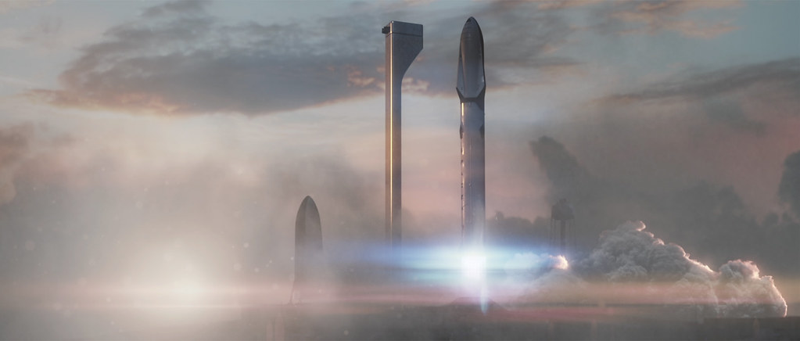
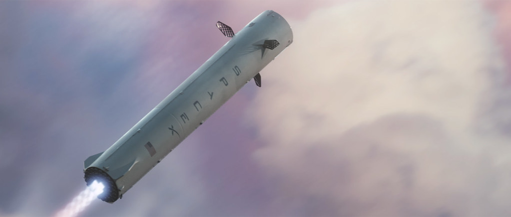

Storia SpaceX · Tredicesima parte · IAC, 27 settembre 2016
Marte, una ragione per andare avanti
Non si vive soltanto di problemi da risolvere. Servono anche un obiettivo, qualcosa da costruire, una ragione per alzarsi e andare al lavoro. Nel settembre di AMOS-6, SpaceX presenta al mondo il proprio sogno marziano.
Indice Storia SpaceXVentisei giorni dopo il disastro
Il 27 settembre 2016 Elon Musk sale sul palco del 67° International Astronautical Congress, a Guadalajara, in Messico. Il titolo della presentazione è Making Humans a Multiplanetary Species. Si parla di una presenza umana permanente su Marte, di veicoli enormi, di viaggi che dovrebbero smettere di essere imprese irripetibili. Nello stesso momento, in Florida, SpaceX deve ancora capire fino in fondo perché un Falcon 9 sia stato distrutto sulla rampa insieme al satellite AMOS-6. [1] [2]
Fra le due immagini ci sono appena ventisei giorni. Il fuoco di Cape Canaveral è una perdita reale, già avvenuta; il viaggio verso Marte è ancora una possibilità. La rampa danneggiata richiede interventi, i clienti aspettano, i lanci sono fermi. Nessuna animazione può risolvere questi problemi. Eppure rinunciare a parlare del futuro avrebbe significato lasciare che, in quel momento, il futuro di SpaceX fosse descritto soltanto dall'incidente.
L'appuntamento allo IAC non nasce per coprire AMOS-6. La partecipazione di Musk e il tema della conferenza erano stati annunciati in agosto, prima del disastro. Questo conta: Marte non viene inventato per distrarre il pubblico da un razzo perduto. È l'obiettivo di lungo periodo che l'azienda aveva deciso di presentare, e che sceglie di presentare anche quando le circostanze rendono tutto più difficile. [3]
La domanda, allora, non è soltanto se quel gigantesco veicolo possa essere costruito. È anche perché una squadra dovrebbe continuare a impegnarsi dopo un'altra crisi. Per pagare gli stipendi occorrono servizi riusciti e clienti soddisfatti. Ma un'azienda come SpaceX non si comprende interamente attraverso il prossimo contratto. C'è un traguardo che precede il singolo lancio e che gli dà un posto dentro un lavoro più lungo.
Un uomo affaticato, una presentazione che si tiene comunque
All'inizio del filmato Musk appare affaticato. L'espressione è seria, il modo di parlare esitante; non dà l'impressione di una comparsa trionfale. È una lettura delle immagini, non una misura della sua stanchezza. Non conosciamo da quella registrazione quanto abbia dormito, né possiamo attribuire ogni pausa ai problemi delle settimane precedenti. Possiamo però riconoscere il contrasto fra il peso del momento e la vastità di ciò che sta per raccontare. [4]
I problemi non appartengono soltanto a SpaceX. Tesla sta affrontando la crescita della produzione, dopo le difficoltà di forniture della Model X riconosciute dall'azienda stessa in primavera. In agosto ha annunciato l'accordo per acquisire SolarCity, un'operazione impegnativa che deve ancora essere completata. Sono responsabilità industriali e finanziarie concrete, contemporanee alla crisi del Falcon. Non bisogna spostare qui il «production hell» della Model 3 del 2017–2018: nel settembre 2016 il contesto è un altro. [5] [6]
Sarebbe altrettanto sbagliato descrivere Tesla come un'azienda semplicemente ferma. Il comunicato del 2 ottobre, pochi giorni dopo lo IAC, registrerà una forte crescita delle consegne e della produzione nel terzo trimestre. Il lavoro consiste proprio nel gestire questa espansione insieme ai suoi problemi, non nel sostituire una realtà complessa con un ritratto di sola catastrofe. [7]
Musk tiene comunque la presentazione. Non aspetta che ogni urgenza sia superata, che le aziende abbiano smesso di chiedergli attenzione, che il Falcon sia tornato in volo. Questo non lo rende immune dalla fatica e non dimostra che tutte le sue scelte siano giuste. Mostra però che l'aspirazione marziana non è riservata ai giorni facili, quando si può parlare del futuro senza avere nulla di spiacevole da affrontare nel presente.
La conferenza originale
La registrazione SpaceX conserva il tono della presentazione, le esitazioni, gli applausi e il passaggio dai motivi del viaggio all'architettura proposta. Guardarla oggi aiuta a ricordare che siamo davanti a un progetto del 2016, non alla descrizione anticipata di ogni scelta che verrà dopo.
Apri la presentazione sul canale ufficiale SpaceX. Filmato incorporato, non ripubblicato.
Non basta togliere di mezzo i problemi
Risolvere un problema è necessario, ma non sempre basta a dare senso al lavoro. Si può passare una giornata a correggere un difetto, rispondere a una contestazione, recuperare un ritardo. Il giorno dopo ci sarà altro da sistemare. Se l'unico orizzonte è arrivare alla sera senza una nuova emergenza, il lavoro rischia di diventare una successione di ostacoli, anche quando viene svolto bene.
Per SpaceX, Marte rappresenta qualcosa da raggiungere. Un obiettivo abbastanza grande da dare una direzione agli sforzi quotidiani. Il controllo di un componente, una prova al banco, lo studio di un rientro non sono soltanto attività che permettono di chiudere una pratica. Possono contribuire a una capacità che ancora non esiste. È questo il senso profondo della presentazione: non si va avanti soltanto perché ci sono guasti da correggere, ma perché c'è qualcosa che si vuole rendere possibile.
Non possiamo sapere se ogni dipendente viva il proprio lavoro nello stesso modo. Un'organizzazione comprende motivazioni diverse, competenze, contratti e responsabilità. Marte è però la finalità dichiarata che SpaceX porta sul palco. Può offrire un significato condiviso senza cancellare i motivi personali di chi progetta, costruisce o verifica un veicolo.
Musk apre spiegando che vuole rendere Marte una possibilità nella vita delle persone che lo ascoltano. Il traguardo non è soltanto mandare una piccola spedizione e riportarla a casa. È arrivare a una presenza capace di durare. [4] Il pubblico viene invitato a considerare il pianeta come una destinazione, non soltanto come l'oggetto di un esperimento scientifico.
Questa aspirazione non autorizza a trascurare chi ha già affidato un satellite a SpaceX. Il primo obbligo dopo AMOS-6 rimane capire l'accaduto e tornare a offrire un servizio affidabile. Marte non prende il posto dell'indagine. Può dare una ragione ulteriore per portarla a termine, perché un'azienda che non riesce a mantenere i propri impegni presenti non può sostenere a lungo quelli futuri.
È una distinzione che evita due errori opposti. Il sogno non rende irrilevanti i difetti del razzo; il difetto del razzo non rende automaticamente privo di senso ogni sogno. La qualità del lavoro sta nel tenere insieme le due cose. Guardare abbastanza lontano da sapere perché si sta costruendo, abbastanza da vicino da accorgersi di ciò che non funziona.
ITS: dare una prima forma all'aspirazione
Il progetto presentato a Guadalajara si chiama Interplanetary Transport System, ITS. Non ancora Starship. È un'architettura preliminare con un grande booster, una nave interplanetaria e una versione cisterna. Il disegno del lanciatore prevede circa 122 metri di altezza, un booster di 12 metri di diametro con 42 motori Raptor e strutture principali in fibra di carbonio. Sono caratteristiche proposte, non prestazioni dimostrate da un veicolo completo. [8]
La logica combina riutilizzo, rifornimento in orbita, produzione di propellenti su Marte e scelta di metano e ossigeno. Il booster torna sulla Terra; la nave prosegue dopo aver ricevuto altro propellente. Si vuole evitare di consumare un intero sistema a ogni viaggio. [8] Il nome «sistema» ha quindi un significato preciso: il solo razzo non basta, serve una sequenza di operazioni che permetta di partire, arrivare e continuare a viaggiare.
Rifornire in orbita separa due problemi che un lancio unico dovrebbe affrontare insieme. Un veicolo deve prima raggiungere l'orbita terrestre; per dirigersi altrove deve poi disporre del propellente necessario. Trasportarlo attraverso altre missioni non elimina il lavoro, lo distribuisce. Richiede rendezvous, trasferimenti, controllo delle temperature e operazioni affidabili. L'animazione fa vedere il risultato desiderato; l'ingegneria deve ancora costruire e verificare ogni passaggio.
Anche la produzione di propellenti a destinazione ha un ruolo concreto. Dover portare dalla Terra tutto ciò che serve per tornare condiziona enormemente la missione. Utilizzare risorse locali può cambiare questo conto, ma la disponibilità degli ingredienti non equivale alla disponibilità di un impianto funzionante. Bisogna arrivare, procurarsi energia, raccogliere e trattare le risorse, produrre, conservare. Un piano di massima indica cosa dovrà esserci; non dimostra ancora che ci sarà.

.jpg){kind=link}
Il problema del costo, prima ancora del biglietto
Musk propone una nave per almeno un centinaio di persone e un costo per passeggero che, nell'obiettivo di lungo periodo, scenda verso quello di una casa: circa 200.000 dollari nel riferimento americano usato allora. Sono obiettivi economici del progetto, non un prezzo di vendita o un servizio prenotabile. [8]
La differenza è sostanziale. Una missione eccezionale può essere sostenuta come grande impresa nazionale; una presenza duratura richiede trasporti che possano ripetersi. Se ogni viaggio consuma mezzi costosissimi e ogni nuovo carico deve ricominciare da zero, la scala dell'insediamento rimane limitata. Il riutilizzo cerca di cambiare la struttura del costo, non soltanto di ottenere una bella immagine dell'atterraggio.
I recuperi del Falcon hanno già mostrato che un primo stadio può tornare. Non hanno dimostrato un trasporto umano interplanetario a basso costo. Fra le due capacità c'è una distanza enorme. La conferenza la affronta formulando un progetto, ma non la colma. La sfida è trasformare una capacità sperimentale in un servizio ripetibile e poi estenderla a veicoli, velocità e missioni differenti.
Resta aperto anche il finanziamento. Musk indica i servizi satellitari e per la NASA, risorse private e possibili collaborazioni pubbliche; non presenta un programma interamente finanziato. [4] La possibilità tecnica e quella economica devono avanzare insieme. Non basta che una nave sia concepibile se non si può sostenere il lavoro necessario a costruirla e usarla.

.jpg){kind=link}
Un progetto di massima, ma non soltanto immagini
Definire ITS un'idea di massima non significa che SpaceX non abbia iniziato a lavorare. Il 25 settembre, poco prima della conferenza, è documentata una prova del motore Raptor. La fotografia del banco mostra hardware acceso, non una nave disegnata al computer. [9] È un risultato circoscritto e importante: un elemento necessario al futuro sistema viene sottoposto a una verifica reale.
Un motore al banco non è un razzo pronto. Non dimostra che il booster possa essere costruito nelle dimensioni indicate, né che la nave possa rientrare, né che cento persone possano raggiungere Marte in sicurezza. Proprio per questo la fotografia va distinta dai rendering. Il sogno comincia a tradursi in lavoro tecnico, ma quel lavoro è ancora molto lontano dalla missione completa.
I calendari sono altrettanto preliminari. Nel discorso Musk prospetta un orizzonte di circa dieci anni soltanto se le cose andranno molto bene e ammette rischi elevati, costi e possibilità di insuccesso. Non è una scadenza garantita. [4] L'aspirazione è prendere sul serio un risultato abbastanza da cominciare, non dichiarare che il risultato sia già assicurato.
In questo c'è qualcosa di più interessante della previsione di una data. La presentazione espone un tentativo al giudizio del mondo. Da quel momento si possono confrontare le proposte con gli sviluppi, chiedere che cosa sia cambiato, osservare che cosa sia stato abbandonato. L'idea acquista una forma pubblica e, con essa, una responsabilità.


La strada cambierà, anche nella struttura
Guardando il progetto dalla prospettiva degli anni successivi, sarebbe sbagliato chiamare ITS semplicemente «la Starship di oggi». C'è una continuità di obiettivo, ma non l'identità del veicolo. Il disegno del 2016 non viene realizzato tal quale, con tutte le sue dimensioni e le sue scelte costruttive.
Già nella presentazione successiva allo IAC, nel 2017, il progetto viene ridimensionato e assume un compito industriale più ampio: un sistema che dovrebbe sostituire i veicoli esistenti e sostenersi anche attraverso attività vicine alla Terra. Il finanziamento smette di essere soltanto una domanda separata dal razzo; diventa una ragione per cambiare il razzo stesso. [10]
Starship e Super Heavy avranno un diametro di riferimento di nove metri, invece dei dodici del booster ITS. Le strutture principali saranno in acciaio inossidabile, non nella fibra di carbonio proposta a Guadalajara. I documenti ambientali NASA del 2019 e FAA del 2026 permettono di verificare questi cambiamenti senza scambiare un rendering storico per una descrizione aggiornata. [11] [12]
Il percorso si intreccerà inoltre con la Luna: nel 2021 la NASA selezionerà SpaceX per sviluppare una versione di Starship destinata all'allunaggio degli astronauti. È una missione con un cliente, requisiti e responsabilità specifici, non la semplice esecuzione della scena marziana del 2016. [13]
Questi cambiamenti non sono dettagli estetici. Materiali e dimensioni influiscono sulla produzione, sulla massa, sulle temperature, sugli impianti necessari. I compiti del veicolo influiscono su chi può pagare lo sviluppo e su quali risultati vadano dimostrati prima. L'obiettivo lontano deve passare attraverso decisioni che si possono prendere e sostenere nel presente.
Perciò il valore di Guadalajara non sta nell'avere previsto esattamente il mezzo che verrà costruito. Sta nell'avere presentato una destinazione e una prima proposta per raggiungerla. Se la proposta deve cambiare per diventare praticabile, modificarla non equivale di per sé a rinunciare alla destinazione. Rinunciare a cambiare, per difendere una figura del 2016, sarebbe una fedeltà al disegno più che al risultato.
Marte rimane un posto difficile
L'aspirazione non rende Marte ospitale. Il pianeta ha un'atmosfera molto tenue, prevalentemente di anidride carbonica, temperature basse e nessun ambiente aperto nel quale una persona possa vivere come sulla Terra. [14] Raggiungerlo e riuscire a rimanervi sono problemi differenti. Una buona soluzione di trasporto non è, da sola, una soluzione per la vita.
Una presenza duratura richiederebbe protezione, energia, acqua, manutenzione e capacità di affrontare guasti lontano dagli aiuti terrestri. La prospettiva di un insediamento non può essere valutata soltanto contando i passeggeri di una nave. Bisogna chiedersi che cosa troveranno all'arrivo e che cosa potranno riparare o produrre quando il primo carico sarà stato utilizzato.
Prendere sul serio queste difficoltà non rovina il sogno. Gli dà un contenuto. Se Marte fosse già facile, non servirebbe un lavoro di questa portata. Ma proprio perché è difficile, l'entusiasmo non deve essere usato come prova di sicurezza. Una persona che un giorno affiderà la propria vita a quel viaggio avrà bisogno di dimostrazioni, non soltanto di un obiettivo condiviso.

.jpg){kind=link}
Una ragione per tornare al lavoro
Il giorno dopo lo IAC, AMOS-6 rimane distrutto. Il Falcon non è tornato in servizio e le risposte che i clienti attendono non si trovano nell'animazione di una nave su Marte. La presentazione non cambia questi fatti. Cambia ciò di cui si può parlare accanto a essi: non soltanto quello che SpaceX ha perduto, ma quello che vuole ancora costruire.
È qui che la conferenza trova il suo posto nella storia dell'azienda. Il dramma dell'incidente e il sogno marziano non appartengono a due SpaceX separate. Sono contemporanei. Ci sono persone impegnate a capire un cedimento e altre a sviluppare una capacità nuova; entrambe le attività devono trovare risorse, attenzione e un motivo per continuare.
Non si vive soltanto di problemi da risolvere. Per alzarsi la mattina e andare al lavoro serve anche poter pensare che quel lavoro conduca da qualche parte. Marte, per SpaceX, è questo: non la promessa che non ci saranno più incidenti, ma una ragione per non lasciare che gli incidenti siano l'unica cosa che definisce il futuro.
Guadalajara non consegna un progetto definitivo né dimostra una futura città marziana. Presenta un'aspirazione abbastanza concreta da essere discussa, verificata, cambiata. Il veicolo potrà diventare diverso, il calendario allungarsi, le soluzioni essere ripensate. Quel giorno, però, SpaceX sceglie di continuare a dire dove vuole andare. E lo fa mentre sta ancora cercando il modo di ripartire.
Fonti e documentazione
Ricostruzione aggiornata il 9 ottobre 2026. Il capitolo torna al settembre 2016, durante la crisi di AMOS-6 narrata nella parte precedente. Le comparazioni del 2017, 2019, 2021 e 2026 sono esplicitamente retrospettive. L'aspetto affaticato di Musk è un'impressione editoriale delle immagini, non una diagnosi o una ricostruzione documentata delle sue ore di sonno. Il senso del lavoro e dell'aspirazione marziana costituisce il filo interpretativo del capitolo.
- [1] International Astronautical Federation, programma della presentazione del 27 settembre 2016. Data, sede e finalità dichiarata.
- [2] Capitolo precedente: AMOS-6, il disastro sulla rampa, con la documentazione SpaceX, FAA e NASA sull'incidente del 1° settembre 2016.
- [3] IAF, Elon Musk to Speak at IAC 2016, comunicato annunciato il 19 agosto 2016. L'appuntamento precede AMOS-6.
- [4] SpaceX, Making Humans a Multiplanetary Species, registrazione originale. Apertura a 1:15–2:55; finanziamento a 44:20–46:19; cautele sul calendario a 55:55–56:22. La frase sull'alzarsi la mattina è qui il pensiero editoriale del capitolo, non una citazione attribuita a questo discorso.
- [5] Tesla, consegne del primo trimestre, 4 aprile 2016. Difficoltà di fornitura della Model X e valutazione dell'azienda sulle cause.
- [6] Tesla e SolarCity, trascrizione ufficiale della conferenza del 1° agosto 2016. Operazione di acquisizione allora annunciata e ancora da completare.
- [7] Tesla, Q3 2016 Production and Deliveries, 2 ottobre 2016. Dati pubblicati dopo lo IAC, utilizzati per distinguere problemi produttivi e crescita effettiva.
- [8] Elon Musk, Making Humans a Multi-Planetary Species, New Space, giugno 2017; copia pubblica del testo. Rielaborazione della conferenza del 2016, non il progetto rivisto allo IAC del 2017. Dimensioni, architettura, propellenti e obiettivi economici sono quelli proposti allora.
- [9] SpaceX, fotografia ufficiale della prova Raptor del 25 settembre 2016; metadati e conferma della dedica CC0.
- [10] Elon Musk, Making Life Multi-Planetary, New Space, 2018. Trascrizione abbreviata della presentazione allo IAC del 2017, distinta dalla conferenza di Guadalajara. Ridimensionamento del sistema e proposta di sostituire Falcon 9, Falcon Heavy e Dragon.
- [11] NASA, valutazione ambientale Starship/Super Heavy al Kennedy Space Center, agosto 2019, sezione 2.1. Architettura a due stadi e diametro di nove metri.
- [12] FAA, Starship/Super Heavy LC-39A Final Environmental Impact Statement, volume I, gennaio 2026, sezione 3.13.4.2.2. Struttura principale in acciaio inossidabile. Non viene usato per attribuire al progetto del 2016 configurazioni successive.
- [13] NASA, selezione di SpaceX per il lander lunare, 16 aprile 2021. Contratto di sviluppo HLS, non attestazione di un allunaggio già compiuto.
- [14] NASA Science, Mars: Facts. Atmosfera e condizioni ambientali del pianeta.
Immagini e riutilizzo
Tre rendering ufficiali SpaceX pubblicati nel settembre 2016 e una fotografia reale della prova Raptor, tutti con dedica CC0 verificata. Le illustrazioni sono sempre distinte dagli eventi avvenuti. Il registro delle immagini riporta fonti, licenze e date. Nessuna immagine generata per il sito e nessuna approvazione SpaceX implicata.